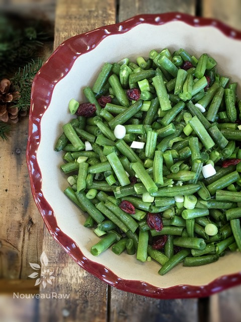
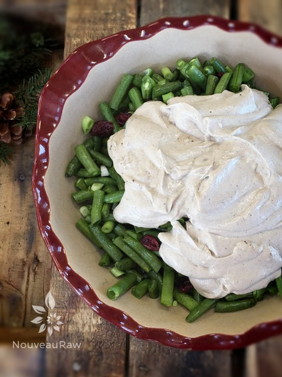
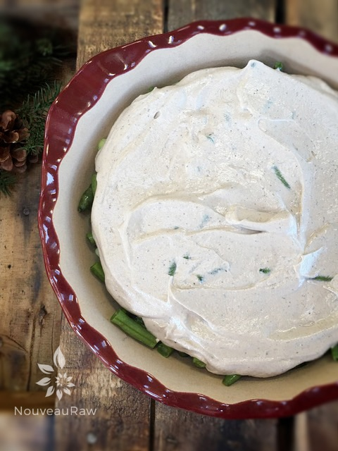
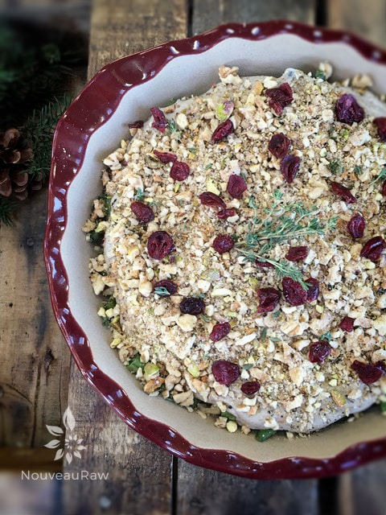

Warm Green Bean Casserole with Buttery Walnut Crumble

~ raw, vegan, gluten-free ~
You know, it is too bad that I had to get well into my adult years to appreciate casseroles. As a child, they scared me. Too many UFO’s (un-identifiable-objects) were in them.
Just like any child, I went through my stage where single foods, went into single piles… boundaries were put into place, staffed with highly skilled security guards. No green bean was ever to enter my mound of mashed potatoes and visa versa.
Over the years, I slowly let go of this eating pattern, and now, I mix just about anything and everything together. “Mom… for all those meals set before me at the dinner table, as I sat there with swinging legs, crossed arms and a wrinkled nose… I am sorry, forgive me?” It’s never too late to ask forgiveness. Go ahead, pick up the phone and call your mom. I will wait for you. :)
This raw dish is meant to be enjoyed warmed. Here are a few tricks to accomplish that… For starters, after assembling the casserole, cover it and slide the dish into the dehydrator overnight or at least for a good eight hours. The green beans will still have a little crunch to them.
If you wish, you could always marinate the green beans with a little olive oil and salt prior to putting the dish together. Just put the three ingredients into a ziplock bag and dehydrate at 115 degrees for 4-6 hours or until tender. Then proceed with the recipe. Also, warming the dinner plate before serving up the food will help. You can fill the sink with the hottest water you can get from the tap, or you could boil some in a kettle. Let the plates sit in the water for 15+ minutes.
If you don’t have a dehydrator, you can use the oven. Be sure to select the lowest setting. It most likely will “cook” and no longer will be raw, but it is still a healthy alternative to many traditional green bean casseroles.
I served this with my Raw Cranberry and Pomegranate Relish. Let’s make it a practice to eat with “Thanksgiving” every day. Many blessings!
Yields 9″ baking dish
Cream of mushroom soup:
- 1/4 cup water
- 2 Tbsp fresh lemon juice
- 1 tsp maple syruip
- 1 Tbsp coconut amino
- 1 tsp onion powder
- 1 tsp garlic powder
- 1 tsp dried thyme
- 1/2 tsp black pepper
- 1/4 tsp celery salt
- 1 cup raw cashews, soaked 2+ hours
- 8 oz (2 cups) diced, raw mushrooms
Hand-mix:
- 1 lb cut raw green beans
- 1/4 cup green onions, whites and greens
- 1/4 cup dried cranberries, divided
Buttery walnut crumble:
Preparation:
Cream of mushroom soup:
- In a high-powered blender combine the water, lemon juice, maple syrup, amino, onion powder, garlic powder, thyme, black pepper, celery salt, and cashews. Blend until it is smooth and creamy.
- Add the diced mushrooms and blend again until smooth. I used Portobello mushrooms but removed the dark gills to prevent the soup mix from turning too dark in color. Set aside.
Hand mix:
- Cut the green beans on the bias and then in half. I used my handy-dandy green bean splicer. Place in a medium bowl.
- Another time that I made this recipe, I just cut the beans into roughly 1″ pieces. This almost made it easier to eat since the beans don’t totally “cook” to a limp stage as they would at high heat.
- Add diced onion and 2 Tbsp cranberries. Toss together. Place the veggies in a baking dish that fits in your dehydrator.
Buttery walnut crumble:
- Place the walnuts, pistachios, onion powder, and salt in a small ziplock baggie.
- With a rolling pin break the nuts into crumbles.
- Shake the bag, so everything gets well mixed.
Assembly:
- Spread the cream of mushroom soup over the green beans.
- Sprinkle the buttery walnut crumble over the top of the soup.
- Sprinkle the remaining 2 Tbsp of cranberries on top and extra thyme if desired.
- Cover with plastic wrap and slide into the dehydrator and warm at 115 degrees (F) overnight.
- Don’t allow the plastic to come in contact with the food.
- Occasionally, pull the dish out and give it a taste test to see how soft the beans are getting.
- Serve. Store left-over in the fridge for up 2-3 days.




© AmieSue.com